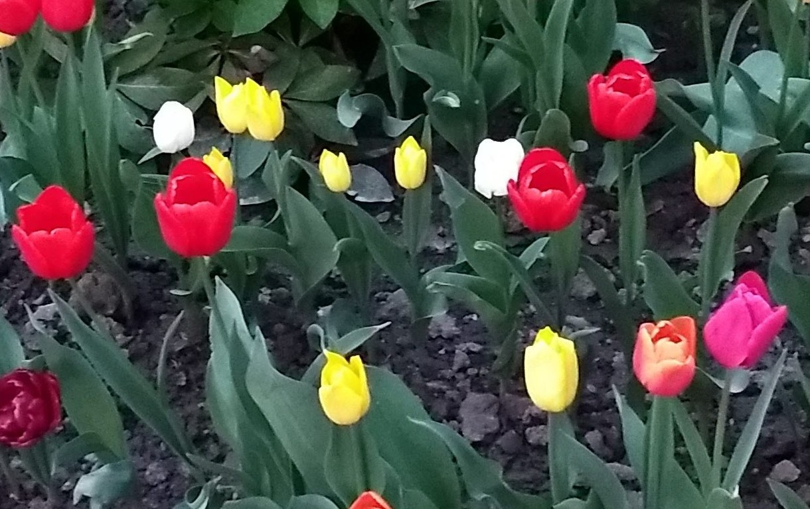

Это мой первый сайт, созданный с помощью HTML и Блокнота.
Меня заинтересовало изучать веб-разработку и экспериментировать с кодом.
Об HTML я узнал в 2023 году, когда изучал возможность перехода в IT. Изучая описания языков программирования, я увидел рекомендацию, что можно начать с программирования в HTML.
Спустя более, чем через год, я попробовал. Мне пока нравится.
Сегодня утром в 11:09, 18.01.2024 я научился использовать тег (''p../p''), используя его для переноса абзацев, попутно узнав, что если отображать тег с помощью горизонтальных галочек, то ничего не отобразиться, поэтому пришлось использовать кавычки и круглые скобки.
Это мой любимый сайт уже очень долгое время, по-моему с 2016-2017 гг.
Однако, кроме него есть ещё этотОгромная благодарность материалам сайтов:
"Как создать простой сайт на HTML в блокноте."
"Таблица основных тегов html с примерами."
Ссылка ниже позже пригодится:
Сегодня (01.06.2025) Я показал код ИИ, Copilot, и он мне сходу дал советы, как улучшить сайт.
Удивительно, что он мне с ходу сгенерировал код для добавки стиля CSS.
В одном варианте он мне предложил встроенный стиль добавления. Он как раз здесь продемонстирован, и проявлется в выравнивании текста по центру и в надписи: "Добро пожаловать на мой сайт!"
Также он дал мне строчку кода, чтобы применить к отдельным элементам прямо в коде. В результате чего появился дополнительный заголовок серого цвета: "Здравствуйте!"
Так я впервые применил ИИ для улучшения страницы сайта.
На данный момент (01.06.2025, в 4:38 Copilot дал мне элементы кода, чтобы внедрить:
1. Добавление кнопки и её доработку (Html, CSS)
2. Добавление анимации (CSS)
3. Размещение кнопки (Html)
Попробуем вставить картинку (01.06.2025б 4:51):

Цветы жёлтые и красные в огороде.
Спасибо данной инструкции:
В 05:20 утра с помощью совета ИИ менял размеры текста в блоке и на самой странице, как заголовки, так и основной текст. В 16:03 (01.06.2025) я доработал сайт, согласно советам ИИ. Благодаря его советам ознакомился с функцией ("section"), внедрил дополнительный подзаголовок ("h2"). Также отладили с ним проблемы с переходом в темновой режим для всех ссылок, и вообще сам переход, а то перестал работать в какой-то момент. Отладили с ним цвета шрифтов ссылок, чтобы при переходе в тёмный режим, ссылки были читабельны, буквы меняли свой цвет, и их было видно. Также очень ИИ помог на оптимизации кода: убрать повторы, сделать объединение его частей.
Всем успешного дня!